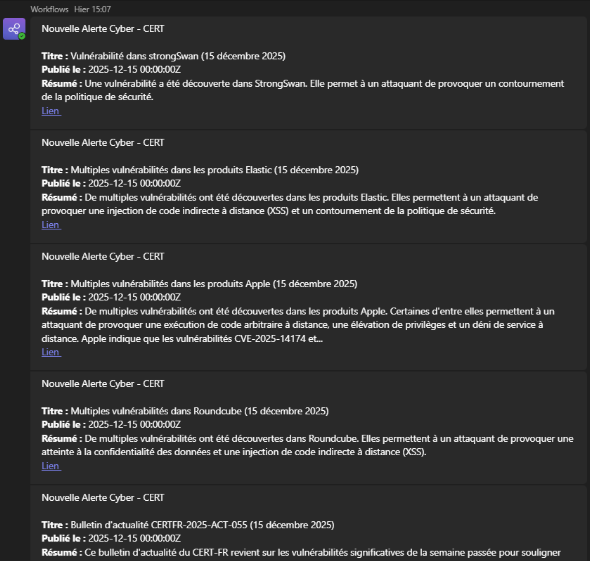

Veille
Veille Technologique
Mes Outils de Veille

Groupe Teams de l'entreprise recevant des newsletters quotidiennes, ce qui permet de centraliser les informations importantes (ANSSI, CERT-FR).
- Newsletters (ANSSI, CERT-FR) - via le groupe Teams de l'entreprise, quotidien
Exemples d'articles & analyses
Exemples d'articles & analyses
Article 1 : Vulnérabilité dans les produits APPLE
Publié le : 15/12/2025
De multiples vulnérabilités ont été découvertes dans les produits Apple. Certaines d'entre elles permettent à un attaquant de provoquer une exécution de code arbitraire à distance, une élévation de privilèges et un déni de service à distance. Apple indique que les vulnérabilités CVE-2025-14174 et CVE-2025-43529 sont activement exploitées.
Lire la source : Avis CERT-FR